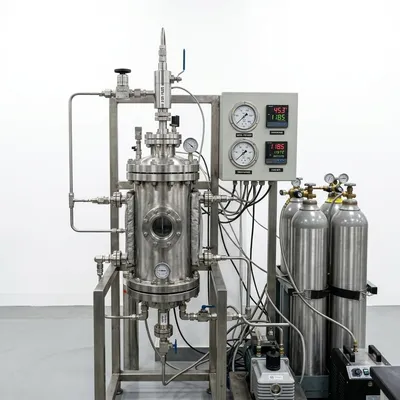
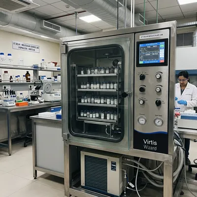
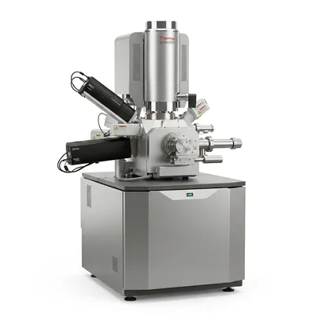
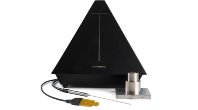
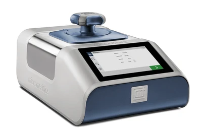
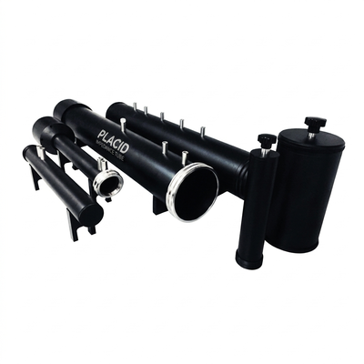
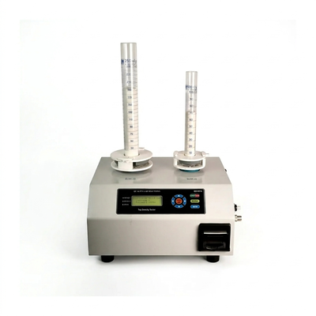
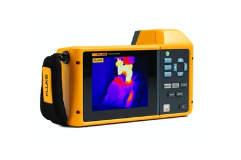
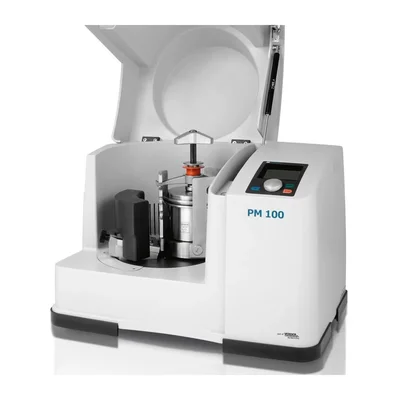
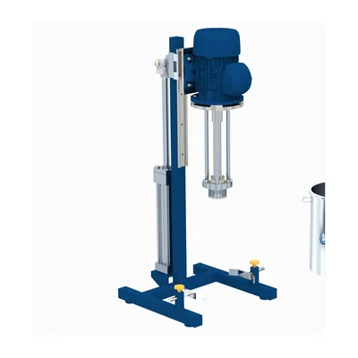

Research Facilities
Explore our state-of-the-art laboratory infrastructure equipped for advanced synthesis, precise characterization, and multi-scale material analysis.

Supercritical CO₂ Dryer
A specialized 3L high-pressure system (up to 675 bar) critical for aerogel synthesis. It extracts solvents at supercritical states to preserve the monolith structure with 99%+ porosity.

Vacuum Lyophilizer
High-precision freeze-drying system for structural preservation. Used in creating hierarchical pore structures via temperature-controlled ice sublimation.

FESEM TESCAN MAGNA
Ultra-high resolution Field Emission Scanning Electron Microscope. Equipped with a Triglav column for exceptional nanoscale resolution and material contrast.

Thermal Conductivity
Steady-state heat flux analysis system. Used to benchmark the extreme thermal insulation performance of fiber-reinforced aerogel composites.

Gas Pycnometer
High-precision skeletal volume determination using Helium displacement. Critical for calculating true density and porosity in hybrid porous materials.

Impedance Tube
Acoustic characterization system for measuring sound absorption coefficients and transmission loss in multi-layered functional textiles.

Tapped Density Meter
Automated mechanical tapping for determining bulk and tap density of porous granules and textile fiber aggregates.

Thermal Imaging
High-sensitivity infrared visualization for real-time monitoring of heat distribution and active cooling in smart textile wearables.

Planetary Ball Mill
High-energy mechanical milling for homogeneous particle size reduction and reactive blending of chemical precursors.

High Shear Homogenizer
High-energy mechanical shear for the creation of stable sub-micron emulsions and uniform dispersion of nanomaterials.